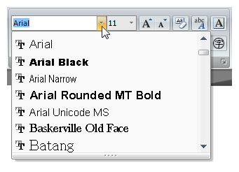
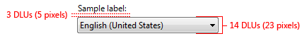
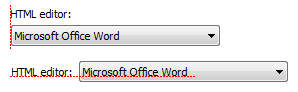

[!NOTE] This design guide was created for Windows 7 and has not been updated for newer versions of Windows. Much of the guidance still applies in principle, but the presentation and examples do not reflect our current design guidance.
With a drop-down list or combo box, users make a choice among a list of mutually exclusive values. Users can choose one and only one option. With a standard drop-down list, users are limited to choices in the list, but with a combo box they can enter a choice that isn't in the list.
A typical combo box.
The following terms are important to understand as you read this article:
[!Note]
Guidelines related to layout are presented in a separate article.
To decide, consider these questions:
Drop-down lists
Is there a default option that is recommended for most users in most situations? Is seeing the selected option far more important than seeing the alternatives? Consider using a drop-down list if you don't want to encourage users to make changes by hiding the alternatives. If not, consider radio buttons, a single-selection list, or an editable list box, which give more emphasis to the alternative choices.

In this example, the highest color quality is the best choice for most users, so a drop-down list is a good choice to downplay the alternatives.
Do you want to draw attention to the option? If so, consider radio buttons, a single-selection list, or an editable list box, which tend to draw more attention by taking more screen space. Because drop-down lists are compact, they are good choices for options that you want to underemphasize.
Is screen space at a premium? If so, use a drop-down list because the screen space used is fixed and independent of the number of choices.
Are there other drop-down lists on the window? If so, consider using a drop-down list for consistency.
Editable drop-down lists
In addition to the principles just provided for drop-down lists, the following also apply:
Are the possible choices constrained? If so, use a normal drop-down list instead. Combo boxes are for unconstrained input, in which users may need to enter a value not currently in the list. Because the input is unconstrained, if users enter text that isn't valid you must handle the error with an error message.
Can you enumerate the most likely choices in advance? If not, use a text box instead.
Is the drop-down list being used to list previous user input? Unless users need to review the complete list of previous input, use a text box with the auto-complete option instead.

In this example, users may need to review their previous input, so an editable drop-down list is a good choice.

In this example, a text box with auto-complete is a good choice.
Will users need assistance in selecting valid values? If so, use a text box with a Browse button instead.

In this example, users can click "To" to help them select valid values.
Is it important to encourage users to review the alternative choices or invite change? If so, consider using an editable list box instead. With an editable drop-down list, users aren't going to be aware of the alternatives until the list is dropped.
Do users need to locate an item rapidly in a large list? (Win32 only) If so, use a combo box because users can select an item by typing its full name. By contrast, the Win32 drop-down list selects items based only by the last character typed (so typing "Jun" into a list of months would match November, not June). In this case, use a combo box even if the possible choices are constrained.
Editable list boxes
For drop-down lists, the number of items in the list isn't a factor in choosing the control because they scale from thousands of items all the way down to one. Editable drop-down lists scale from thousands of items down to none, because users can enter a value that isn't in the list. Because drop-down lists can be used for data, the number of items might not be known in advance and perhaps cannot be guaranteed. Always include at least three items in editable list boxes to justify the additional screen space.
Drop-down lists and combo boxes have several usage patterns:
| Usage | Example |
|---|---|
| Drop-down list a standard drop-down list, with a fixed set of predetermined values. | When closed, only the selected item is visible. When users click the drop-down button, all the options become visible. To change the value, users can open the list and click another value. In this example, the list is in its normal state. In this example, the list has been dropped down. |
| Preview drop-down list a drop-down list that previews the results of the selection to help users choose. |  In these examples, the drop-down lists preview the results of the selection. In these examples, the drop-down lists preview the results of the selection. |
| Editable drop-down list a drop-down combo box, which allows users to enter a value that isn't in the drop-down list. |  Examples of an editable drop-down list in edit and dropped-down modes. Use this control when you want to give the flexibility of a text box, yet want to assist users by providing a convenient list of likely choices. Examples of an editable drop-down list in edit and dropped-down modes. Use this control when you want to give the flexibility of a text box, yet want to assist users by providing a convenient list of likely choices. |
| Editable list boxes a regular combo box, which allows users to enter a value that isn't in the always visible list. | In these examples, the editable list boxes are always displayed. This control is a better choice than the editable drop-down list when it is important to encourage users to review the alternative choices or invite change. |
Sort list items in a logical order, such as grouping highly related options together, placing most common options first, or using alphabetical order. Sort names in alphabetical order, numbers in numeric order, and dates in chronological order. Lists with 12 or more items should be sorted alphabetically to make items easier to find.
Correct: 
In this example, the list items are sorted by their spatial relationship.
Incorrect: 
In this example, there are so many list items that they need to be sorted in alphabetical order.
Correct:
In this example, the list items are sorted in alphabetical order except for the option that represents all items.
Place options that represent All or None at the beginning of the list, regardless of the sort order of the remaining items.
Enclose meta-options in parentheses.

In this example, "(None)" is a meta-option because it is not a valid value for the choice rather it describes that the option itself isn't being used.
When disabling a drop-down list or combo box, also disable any associated labels and command buttons.
When a single drop-down list is used to change the view of an associated control, change the view immediately on selection instead of requiring a separate command button. Use a separate command button only if the list takes a significant amount of time to render. However, list headers and menu buttons are the preferred controls for this purpose.
Don't have blank list items use meta-options instead. Users don't know how to interpret blank items, whereas the meaning of meta-options is explicit.
Correct: 
Incorrect: 
In the incorrect example, the meaning of the blank option is unclear.
Use previews in the list items when it is better to show with images than describe using text alone.

In this example, the preview explains the options far better than text alone.
Don't use unnecessary, unhelpful icons in previews.
Incorrect: 
In this example, the preview icons are unnecessary because they don't communicate any information.
Limit the length of the input text when you can. For example, if the valid input is a number between 0 and 999, use a combo box that is limited to three characters.
If there are many possible options, focus the list contents on the most likely options. Because users can enter values that aren't in the list, combo boxes don't have to list all choices, just the likely choices or a representative sample.
In this example, many valid choices aren't listed, such as 15, or half-size fonts such as 9.5.
A prompt is a label or short instruction placed inside an editable drop-down list as its default value. Unlike static text, prompts disappear from the screen once users type something into the combo box or it gets input focus.

A typical prompt.
Use a prompt when:
Don't use prompts just to direct users to select something from the list or to click buttons. For example, prompts like Select an option or Enter a filename and then click Send are unnecessary.
When using prompts:
Incorrect:
In this example, screen space is not at a premium; once an editable drop-down list is filled out, it is difficult for users to remember what it is for; and the prompt text is editable and drawn the same way as real text.

Recommended sizing and spacing for drop-down lists and combo boxes.
Control labels
Write the label as a word or phrase, not as a sentence, and end it with a colon. Exceptions:
Assign a unique access key for each label. For guidelines, see Keyboard.
Position the label either to the left of or above the control, and align the label with the left edge of the control. If label is on the left, vertically align the label text with the control text.
Correct: 
In this example, the label is correctly aligned with the control text.
Incorrect: 
In this example, the label is incorrectly aligned with the control text.
You may specify units (seconds, connections, and so on) in parentheses after the label.
Don't make the content of the drop-down list or combo box (or its units label) part of a sentence, because this is not localizable.
Option text
Instructional text
If you need to add instructional text about a drop-down list or combo box, add it above the label. Use complete sentences with ending punctuation.
Additional information that is helpful but not necessary should be kept short. Place this information either in parentheses between the label and colon, or without parentheses below the control.
This example shows additional information placed below the control.
When referring to drop-down lists:
Example: In the Font size list, click Large fonts.
When referring to combo boxes:
Example: In the Font box, enter the font you want to use.